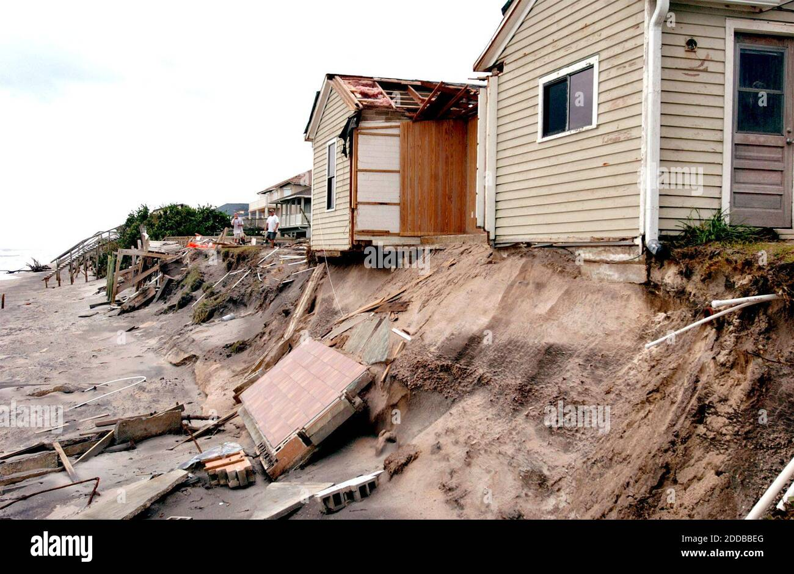
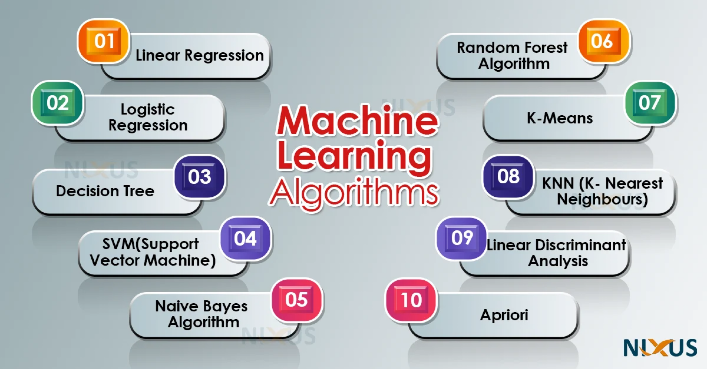
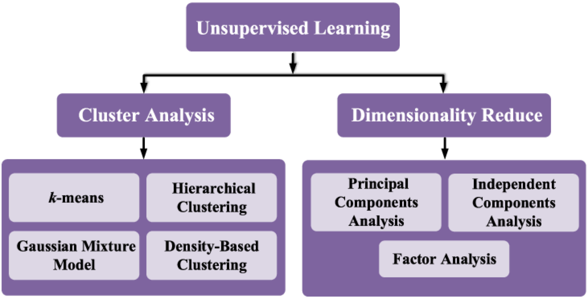

Introduction to Data Science
IN2004B: Generation of Value with Data Analytics
Department of Industrial Engineering
Agenda
- Data Science
- Supervised and Unsupervised Learning
Data Science
Data Science is …
a multidisciplinary field that uses scientific methods, processes, algorithms, and systems to extract knowledge and insights from vast amounts of structured and unstructured data.


Similar concepts
Data mining is a process of discovering patterns in large data sets using methods at the intersection of statistics and database systems.
Predictive modeling is the process of developing a model so that we can understand and quantify the accuracy of the model’s prediction in yet-to-be-seen future data sets.
Statistical learning refers to a set of tools (statistical models and data mining methods) for modeling and understanding complex data sets.
In 2004…
Hurricane Frances battered the Caribbean and threatened to directly affect Florida’s Atlantic coast.


Residents headed for higher ground, but in Arkansas, Walmart executives saw a big opportunity for one of their newest data-driven weapons: predictive technology.
A week before the storm made landfall, Linda M. Dillman, Wal-Mart’s chief information officer, pressured her staff to create forecasts based on what had happened when Hurricane Charley hit the area several weeks earlier.
Backed by trillions of bytes of purchase history stored in Walmart’s data warehouse, he said, the company could “start predicting what’s going to happen, rather than waiting for it to happen,” as he put it.
The result
The New York Times reported
“… Experts analyzed the data and found that stores would indeed need certain products, not just the typical flashlights.”
Dillman said
“We didn’t know in the past that strawberry Pop-Tarts increase their sales, like seven times their normal sales rate, before a hurricane.”
Cross-Industry Standard Process (CRISP) for Data Science

CRISP Model
Business Understanding: What does the business need?
Data Understanding: What data do we have or need? Is it clean?
Data Preparation: How do we organize the data for modeling?
Modeling: What modeling techniques should we apply?
Evaluation: Which model best meets business objectives?
Deployment: How do stakeholders access the results?
Business understanding
Business understanding refers to defining the business problem you are trying to solve.
The goal is to reframe the business problem as a data science problem.
Reframing the problem and designing a solution is often an iterative process.
Problems in Data Science
Classification (or class probability estimation) attempts to predict, for each individual in a population, which of a (small) set of classes that individual belongs to. For example, “Among all T-Mobile customers, which ones are likely to respond to a given offer?”
Regression attempts to estimate or predict, for each individual, the numerical value of some variable for that individual. For example, “How much will a given customer use the service?”
Clustering attempts to group individuals in a population based on their similarity, but not for any specific purpose. For example, “Do our customers form natural groups or segments?”
Discussion
Often, reframing the problem and designing a solution is an iterative process.
The initial formulation may not be complete or optimal, so multiple iterations may be necessary to formulate an acceptable solution.
The key to great success is creative problem formulation by an analyst on how to frame the business problem as one or more data science problems.
Data understanding I
If the goal is to solve a business problem, data constitutes the raw material available from which the solution will be built.
The available data rarely matches the problem.
For example, historical data is often collected for purposes unrelated to the current business problem or without any explicit purpose.
Data understanding II
- Data costs vary. Some data will be available for free, while others will require effort to obtain.
A key part of the data understanding phase is estimating the costs and benefits of each data source and deciding whether further investment is justified.
Even after acquiring all the data sets, compiling them may require additional effort.
Example
In the 1980s, credit cards had uniform pricing — companies lacked the systems for mass differential pricing.
By 1990, Richard Fairbanks and Nigel Morris saw that IT could power predictive models to customize offers (pricing, credit limits, low introductory rates, cash back, loyalty points).
Signet Bank’s strategy: model profitability, not just probability of default, since a small fraction of customers generate most profits.
- Problem: They lacked data on how different credit terms affected profitability.
- Solution: Acquire data at a cost — run experiments offering varied terms to different customers. Losses from these offers were considered investments in data.
What happened?
As expected, Signet’s number of bad accounts skyrocketed.
The losses continued for several years while data scientists worked to build predictive models from the data, evaluate them, and implement them to improve profits.
Because the company viewed these losses as investments in data, they persisted despite complaints from stakeholders.
Eventually, Signet’s credit card business turned around and became so profitable that it was spun off to separate it from the bank’s other operations, which were now overshadowing the success of its consumer lending business.
Richard Fairbanks and Nigel Morris
Founders of
Most used data science tools
- Python
- R
- SAS
- Excel
- Power BI
- Tableau
- Apache Spark
Other tools
RapidMiner (https://rapidminer.com/products/studio/)
Trifacta (https://www.trifacta.com/)
BigML (https://bigml.com/)
MLBase (http://www.mlbase.org/)
Google Cloud AutoML (https://cloud.google.com/automl/)
Supervised and Unsupervised Learning
Terminology
Predictors. They are represented using the notation \(X_1\) for the first predictor, \(X_p\) for the second predictor, …, and \(X_p\) for the p-th predictor.
\(\boldsymbol{X} = (X_1, X_2, \ldots, X_p)\) represents a whole collection of \(p\) predictors.
Response. \(Y\) represents the response variable, which we will attempt to predict.
Types of learning
In data science (and machine learning), there are two main types of learning:
Supervised learning
Unsupervised learning
Supervised learning…
Includes algorithms that learn by example. That is, we provide the supervised algorithm with a data set with known predictor and response values. The algorithm must find a way to determine the responses from the predictors.
Since we have the correct (true) responses, the algorithm can identify patterns in the data, learn from its mistakes, and make better predictions of the responses.
The algorithm is trained to reach a high level of accuracy and performance for predicting the responses.
Mathematically
We want to establish the following relationship
\[ Y = f(\boldsymbol{X}) + \epsilon, \]
where \(f\) is a function of the predictors and \(\epsilon\) is a natural (random) error.
- \(f(\boldsymbol{X})\) represents the true relationship between the response (\(Y\)) and predictors (\(\boldsymbol{X}\)).
- However, \(f(\boldsymbol{X})\) is unknown and very complex!
A supervised algorithm attempts to construct an approximation \(\hat{f}(\boldsymbol{X})\) to the true function \(f(\boldsymbol{X})\) using available data on the predictors and response.
Ideally, the algorithm builds an \(\hat{f}(\boldsymbol{X})\) that is interpretable, but not necessarily.
Two data sets
In supervised learning, there are two main types of data:
Training data is data used by the supervised algorithm to construct \(\hat{f}(\boldsymbol{X})\).
Test data is data NOT used in the algorithm’s training process, but is used to evaluate the quality of \(\hat{f}(\boldsymbol{X})\).
Popular supervised algorithms
Unsupervised learning…
studies data of the predictors (\(\boldsymbol{X}\)) to identify patterns. There are no responses.
An unsupervised algorithm identifies correlations and relationships by analyzing available training data. So, the unsupervised algorithm is left to interpret the data set and organize it in some way to describe its structure.
In technical terms, we want the algorithm to say something about the joint probability distribution of the predictors \(P(X_1, X_2, \ldots, X_p)\).
Popular Unsupervised Algorithms
Let’s play with supervised models.
Return to main page

Tecnologico de Monterrey